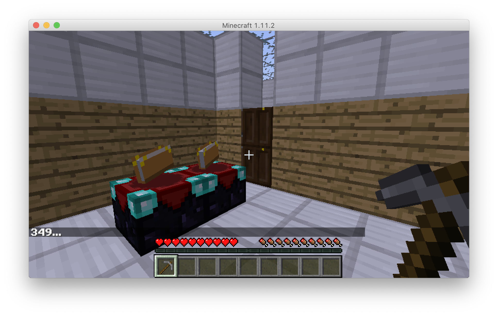

Set up Malmo#
Malmo is the platform we use for controlling agents in Minecraft and collecting data of Minecraft players.
Follow the instructions to download the prebuilt version of Malmo, install the dependencies, and configure your JAVA_HOME environment variable. You can install Malmo at the same working directory as the tom-minecraft repository.
Configure JAVA_HOME environment variable#
To set JAVA_HOME on MacOS, follow the instructions.
To set JAVA_HOME on Windows, press Windows key and search for "Environmental Variables" > New > Choose folder where you downloaded C:\\Program Files\Java\jdk1.8.0_251
When you check your Java version on terminal, it should show that you have JDK 1.8.0_*** depending on the Java SE you installed on Oracle site:
(On MacOS)
$ java -version
openjdk version "1.8.0_222"
OpenJDK Runtime Environment (AdoptOpenJDK)(build 1.8.0_222-b10)
OpenJDK 64-Bit Server VM (AdoptOpenJDK)(build 25.222-b10, mixed mode)
Test run Malmo environment#
We are going to run an example maze that looks like our Stata center first floor. You need to have two terminal panels open.
At one panel, launch Malmo client.
(On MacOS)
$ cd /YOUR_WORKING_DIRECTORY/Malmo/Minecraft
$ ./launchClient.sh
(On Windows)
$ cd \YOUR_WORKING_DIRECTORY\Malmo\Minecraft
$ launchClient
It might take you a minute when launching it for the first time. When you see the terminal showing > Building 95% > :runClient and a "Minecraft 1.11.2" window showing up, you are successful. Otherwise, check if your JAVA_HOME environment has been set properly
At another panel, run our code for initiating a Minecraft world based on a csv file that specifies the map.
(On MacOS)
$ cd /YOUR_WORKING_DIRECTORY/tom-minecraft/gridworld
$ python malmo.py
You should see the following world being loaded in your "Minecraft 1.11.2" window:
<<<<<<< HEAD

=======
For MacOS#
cd Malmo/Minecraft and run ./launchClient
7f4c4a3769bce8f618b6b613db82e6d8ce10ed60